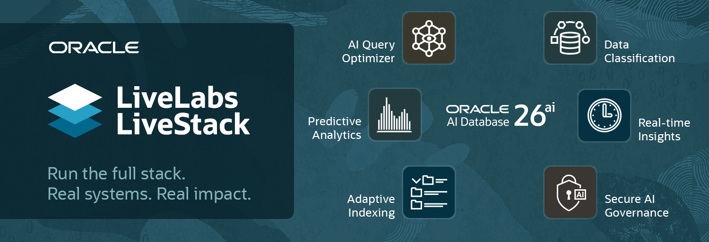
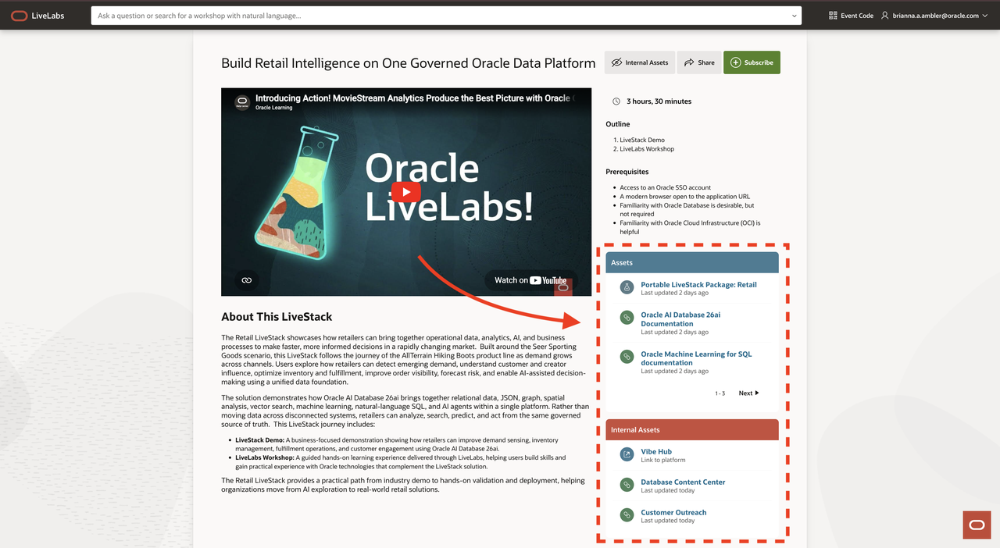
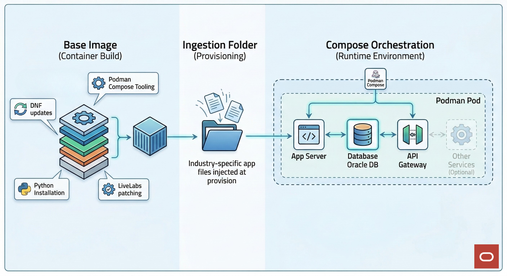

LiveLabs solutions
Meet LiveStack
A LiveStack brings together a business-focused demo, hands-on workshops, and supporting assets. Use it to explore an industry solution, try it, and plan your next step.


Search the introduction, LiveLabs guide, and WMS guides.
Why use a LiveStack?
From a business story to hands-on experience
Authors connect related content in one place. Learners get a clear path from understanding the outcome to trying the technology.
- 01 · ENVISION
See the solution
A working demo makes the business outcome concrete.
- 02 · TRY
Learn by doing
Follow the included workshops to explore the technology.
- 03 · EMBED
Make it your own
Use available deployment assets and their setup instructions.
- 04 · SCALE
Extend the solution
Validate and adapt it for your data, users, and environment.
A quick example
Retail intelligence, in one bundle
Start with a retail demo about demand, inventory, and fulfillment. Follow the companion workshop, then explore the portable package and product references in Assets.
LiveStack ≠ LiveStack Demo.
The LiveStack is the whole package. The demo is one component within it.


How it works
A package, backed by working software
WMS connects the demo, workshop entries, and supporting assets. LiveLabs presents them as one ordered journey.
For container-based demos, a prepared image and solution files bring the application, database, and APIs together. The diagram shows this reference model—not a required architecture for every bundle.
Run options and deployment assets vary. Always check the selected entry’s prerequisites and README before reserving or deploying.


Choose your next step
Use, author, or deliver
LiveStacks on LiveLabs
Explore bundles, subscribe, follow a demo, and work hands-on.
LiveLabs platform guide →Create a LiveStack
Assemble entries and assets, then request publication.
WMS author guide →Create a LiveStack event
Choose the bundle, configure attendance, and review entry events.
WMS event guide →Explore further: LiveLabs catalogLiveStack source repositoryTeam overview (Oracle access)